TLSView Manual
A Molecular Viewer for TLS Rigid Body Motion
 |
|---|
|
Figure 1: TLSView visualization of protein backbone atoms using thermal ellipsoids contoured at the 50% isoprobability level. Atoms from several independent TLS groups are shown in different colors. This visualization uses two ellipsoids per atom. One opaque ellipsoid is derived from the reduced translation tensor Tr, the minimum translational component of the TLS predicted anisotropic ADP for the atom. The larger transparent ellipsoid is derived from the full TLS predicted ADP for the atom, UTLS, which includes the additional displacement from three TLS screw motions.
|
Introduction
The TLSView molecular viewer specializes in visualizing TLS rigid body displacements in macromolecular structures. It uses OpenGL for interactive graphics rendering, and supports most of the macromolecular visualization styles found it other programs. TLSView includes several new visualizations designed to represent TLS model parameters as physical displacements of the atomic model. The 20 parameters of a TLS model can be interpreted as six independent rigid body displacements: three orthogonal translational displacements, and three screw displacements. The screw displacement axes are orthogonal, but do not necessarily intersect at a common point. This is the canonical interpretation of TLS displacement, and the trajectories of these six independent displacements are used by TLSView to draw static trajectory paths and animate atomic model visualizations.
Running TLSView
The TLSView program is located in the mmLib applications/ directory, and the program is actually called tlsviewer.py. For TLSView to run correctly, mmLib must be properly installed. See the README.txt and INSTALL.txt files for instructions on how to correctly set up mmLib and its dependencies. Once mmLib is installed, TLSView can be run by the shell command:
# python tlsviewer.py [PDB/mmCIF path]
Translation, Libration, Skew (TLS) Model Overview
Here are links to well-written introductions of Chasles' Theorem, tensors, and the multivariate Gaussian distribution. They are subjects used in the formulation of the TLS model.
In Euclidean space, a rigid body undergoing displacement is fully described by a 3x3 rotation matrix R and a 3x1 translation vector t. The displacement can be simplified further and described by a simple screw displacement(see Chasles' Theorem): a rotation about a 3x1 vector up to given rotational magnitude while being translated along the vector by a magnitude proportional to the rotation(screw pitch). Keep in mind the screw displacement takes a rigid body from one orientation to another, but the literal screw displacement trajectory is probably not the actual trajectory followed by rigid body to get to the second orientation. Even with this caveat the screw displacement trajectory is a useful concept when visualizing the rigid body displacement of a structure in a macromolecular viewer, because the magnitude of the displacements are small compared to the size of the rigid body.
The positional model used to refine crystallographic atomic coordinates is a probabilistic model. The atomic coordinates are a atom's mean position as measured over the time of the experiment, and lattice positional differences of all crystallographically equivalent atoms. Individual atomic ADPs give the mean square deviation(MSD) of the ensemble of crystallographically equivalent atoms from their mean position within the Gaussian model. Gaussian MSD is also called variance, and is the square of root mean square deviation sigma. The TLS rigid body model predicts the anisotropic ADPs for atoms based on their vector position relative the the TLS tensor origin. The TLS model does this assuming the atoms are all points on a rigid body undergoing displacement. This is not a Euclidean rigid body displacement, because ADPs are the MSD magnitudes of the atom's position. The re-formulation of the Euclidean rigid body displacement to predict anisotropic ADPs results in a more complex description of rigid body motion requiring 20 unique parameters arranged into three 3x3 tensors: T, L, and S. The T tensor, or translation tensor, is a symmetric 3x3 tensor(six unique parameters) with elements given in units of Angstroms2 just like the individual atomic anisotropic displacement tensor U. The T tensor is the anisotropic translational displacement common to all atoms in the rigid body group. The L, or libration(rotation) tensor, is also a symmetric 3x3 tensor with elements in units of radians2, but commonly converted to degrees2 when reported. The libration tensor describes rotational component of the rigid body displacement. The TLS displacement parameters do not describe displacement directly, but rather give the probabilistic variance in terms of rotation and translation from the refined mean coordinates. T and L tensors are Gaussian variance-covariance tensors, which makes intuitive sense since the anisotropic ADP tensors UTLS the TLS model predicts are also Gaussian variance-covariance tensors. The S tensor is not usually symmetric, and isn't as easy to interpret directly like the L and T tensors. It exists in the TLS model to account for a rotation-translation correlation which occurs when a rigid body undergoes rotation about three orthogonal rotation axes which do not intersect at a common point.
Given the TLS tensors and their origin, a TLS predicted anisotropic ADP may be calculated for any atom using its position relative to the TLS origin by the set of linear equations given in Table 1.
Table 1:
Linear Equations Relating TLS Tensors to the Individual Anisotropic ADP tensor UTLS for a Atom at position x,y,z With Respect to the TLS Origin of Calculations. The rotational units of units of L and S must be given in radians.
| UTLSij |
Equation |
| UTLS11 |
L22z2+
L33y2-
2L23yz+
2S21z-
2S31y+
T11
|
| UTLS22 |
L11z2+
L33x2-
2L31xz-
2S12z+
2S32x+
T22
|
| UTLS33 |
L11y2+
L22x2-
2L12xy-
2S23x+
2S13y+
T33
|
| UTLS12 |
-L33xy+
L23yxz-
L13yz-
L12z2-
S11z+
S22z+
S31x-
S32y+
T12
|
| UTLS13 |
-L22xz+
L23yx-
L13y2+
L12yz+
S11y-
S33y+
S23z-
S21x+
T13
|
| UTLS23 |
-L11yz-
L23x2+
L13xy+
L12xz-
S22x+
S33x+
S12y-
S13z+
T23
|
These equations can also be used to fit TLS tensors to the experimental individual ADPs of a group of atoms in a crystal structure. This requires at least 6 atoms with anisotropic ADPs, or 20 atoms with isotropic ADPs. Isotropic ADPs must be converted from their typical B values to equivalent UISO tensors. Fitting a group of residues in a macro molecule often involves enough atoms so that the TLS parameters are overdetermined. When this is the case, the TLS calculated UTLS tensors can be compared with the experimental U tensors to quantify how well the model fit. TLSView reports two ADP comparison functions: R, and dP2.
U, T, and L are all trivariate Gaussian variance-covariance tensors. Since they are symmetric, each has six independent parameters. Three parameters are the principal MSDs along orthogonal axes, and three are the rotational orientation of the principal axes with respect to the current coordinate system. When a tensor is rotated to its principal axes, the off-diagonal terms become zero and the principal axis MSDs can be read from the diagonal elements. The orientation of the principal axes can be found by calculating the tensor eigenvectors. Most programming routines for calculating eigenvectors return the normalized eigenvalue-eigenvector pairs. The eigenvalue is the independent MSD in the direction of the eigenvector. Table 2 gives a overview of some useful properties common to all trivariate Gaussian variance-covariance tensors.
Table 2: Properties of Trivariate Gaussian Tensor(3x3 Matrix) S
| Calculation |
Description |
|
s11+s22+s33
|
Trace of S. The trace is always equal to the sum of three principal MSDs, and is invariant under rotation. |
|
1/3*(s11+s22+s33)
|
The isotropic approximation of S. |
| eigenvalues(S) |
The MSD magnitudes of the principal axes of S. |
| eigenvectors(S) |
The principal axes of S. |
ntSn
sqrt(ntSn)
|
The MSD/RMSD(root mean square deviation) magnitude in the direction of unit vector n. The anisotropic ADP visualization often referred to as "peanuts" is generated by the RMSD surface of a atom's U tensor. |
| C*sqrt(ntS-1n) |
The distance to the isoprobability ellipsoid surface of S in the direction of unit vector n. The critical value C determines the amount of probability enclosed by the ellipsoid. The value of C is obtained by numerical integration of the trivariate Gaussian, but is constant for all trivariate Gaussian distributions, so the values of C are often just looked up in a table.
|
| 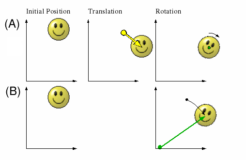 |
|---|
|
Figure 2: Two equivalent displacements of a rigid body. (A) The rigid body is displaced by a translation followed by by a rotation about its centroid. (B) The same displacement reduced to a single rotation about a unique axis.
|
The reduction of a given TLS model to three translational displacements and three screw displacements is accomplished by a series of tensor transformations. The parameters from the L and S tensor are combined to calculate the screw displacements, and the T tensor is reduced to a new translation tensor Tr which is a absolute minimum translational component for the TLS displacement. Put another way, this reduction maximizes the displacement contribution from the screw axes while minimizing the displacement contribution from pure translation. Figure 2 demonstrates this type of reduction in two dimensions, where it is possible to completely eliminate the translational displacement. This is accomplished by shifting the object rotation origin to a unique point where the rotation alone will complete the displacement. Attempting this reduction on a displaced object in three dimensions leads to the result of Chastles' thereom, because a rotation about a axis displaces a object in the plane perpendicular to the rotation axis, and the remaining displacement is a translation perpendicular to the plane(parallel to the rotation axis). The translational contribution of a TLS displacement is also minimized by a origin shift. There is a unique tensor origin which minimizes the trace of T, and makes the S tensor symmetric. This origin is called the center of reaction(cor). The center of reaction is independent of the original tensor origin of calculation which is usually arbitrary. Once the TLS tensor origin is shifted to the cor, the Lcor and Scor tensors can be used to calculate three perpendicular non-intersecting screw displacements which reduces the trace of Tcor further, resulting in a new reduced translation tensor Tr. Table 3 gives a overview of all the the parameters involved in this reduction.
Table 3: TLS Parameter Summary
| Symbol |
Parameter |
Type |
Units
| Description |
| oci |
TLS Origin of Calculations |
3x1 vector/point |
A |
The arbitrary origin of calculations, meaning the origin of the T, L, and S tensors. The positions of the atoms of a TLS group are calculated relative to this origin.
|
| Uij |
Anisotropic ADP Tensor |
3x3 symmetric tensor |
A2 |
The anisotropic form of a individual atomic displacement
parameter(ADP).
|
| UTLSij |
TLS Calculated Anisotropic ADP Tensor |
3x3 symmetric tensor |
A2 |
The anisotropic ADP calculated from a TLS model.
|
| Tij |
Translation Tensor |
3x3 symmetric tensor |
A2 |
The translation tensor of the TLS model. This tensor describes the anisotropic translational component of the rigid body displacement the same way the anisotropic atomic displacement parameters in U describes the translation displacement for a single atom.
|
| Lij |
Libration (Rotation) Tensor |
3x3 symmetric tensor |
RAD2 or
DEG2
|
The libration tensor of the TLS model. This describes the rotational component of the rigid body displacement.
|
| Sij |
Skew/Screw Tensor |
3x3 non-symmetric tensor |
(A*RAD) or
(A*DEG)
|
The skew tensor of the TLS model. This describes
rotation-translation correlation which happens when
the rigid body is rotated about three orthogonal
rotation axes which do not intersect at a single point.
The skew tensor is generally non-symmetric, but through
a transformation of the TLS model origin a unique origin
may be found where it becomes symmetric. This origin is called
the center of reaction.
|
| cori |
Center of Reaction |
3x1 vector/point |
A |
The center of reaction is a special origin which can be calculated using the T L, S, and oc parameters of a existing TLS model. The center of reaction is independent of the TLS model's origin of calculations, and once it has been calculated, the TLS tensors can be transformed to use the center of reaction as the origin of calculations for a new TLS model which predicts the same anisotropic ADPs as the TLS model it was derived from.
|
| Tcorij |
Translation Tensor at the Center of Reaction |
3x3 symmetric tensor |
A2 |
The translation tensor after the origin shift to the center of reaction. The shift to the center of reaction minimizes the trace of the translation tensor.
|
| Trij |
Reduced Translation Tensor |
3x3 symmetric tensor |
A2 |
This is what is left of the translation tensor after the displacements of the Lcor and Scor have been reduced to three non-intersecting screw axes.
|
| Lcorij |
Libration (Rotation) Tensor at the Center of Reaction |
3x3 symmetric tensor |
RAD2 or
DEG2
|
The libration tensor after the shift to the center of reaction. Shifting to a new origin has no effect on the components of the libration tensor.
|
| Scorij |
Skew/Screw Tensor |
3x3 symmetric tensor |
(A*RAD) or
(A*DEG)
|
The skew tensor after the shift to the center of reaction. The center of reaction is the only possible origin which can make the skew tensor symmetric, and is therefore a unique origin for a given TLS model.
|
| rholi |
Position of Screw Axis l With Respect to cor |
3x1 vector |
A |
Three vectors l={1,2,3} corresponding to the three eigenvectors of Lcor. The eigenvectors displaced from the cor by rho are the position and orientation of the TLS canonical screw axes.
|
| pitchl |
Pitch of Screw Axis l |
Real Number |
(A/RAD) or
(A/DEG)
|
Three screw pitches l={1,2,3} corresponding to the screw axes parallel to the three eigenvectors of Lcor.
|
TLS Visualizations
| (A) | (B) |
|
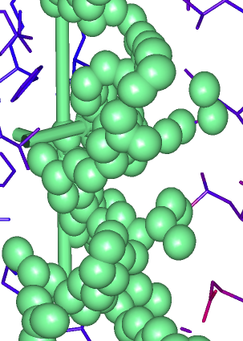
|
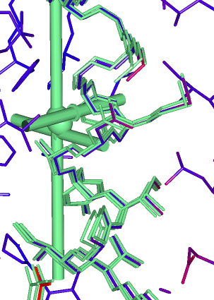
|
| (C) | (D) |
|
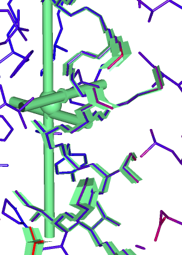
|
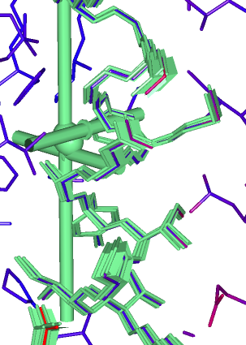
|
|
Figure 3: Four visualizations of the same TLS group along a alpha helix segment. One copy of the structure is shown at the refined coordinates and colored by refined temperature factor. The carbonyl atoms have been omitted for clarity. The visualizations of TLS screw axes and Tr thermal ellipse are colored green. Visualizations of TLS displaced atoms are also colored green. (A) TLS calculated thermal ellipsoids of TLS group atoms with a isoprobability magnitude of 85%. (B) Three green copies of the TLS group atoms as displaced by each screw axes to a magnitude of 85% isoprobability. (C) The trajectory surfaces caused by the TLS screw displacements. This surface is drawn along the atom bond vectors and shows the route the structure takes as it is incrementally displaced to a isoprobability magnitude of 85%. Each screw displacement surface passes through the mean atomic coordinates(the crysallographically refined coordinates) and is symmetric with respect to them. (D) The screw displacement surface from figure C combined with the three rod visualizations from figure B. This figure captures the rod visualizations at one end of their maximum screw displacement during animation in TLSView. If this were a actual animation, the each rod model would travel from one end of its screw trajectory surface to the other. The animation uses a sin function for convenience(what else would you use?), but this is not meant to imply classical harmonic motion.
|
The default TLS visualization used by TLSView assigns each TLS group a unique color and draws a Tr Gaussian isoprobability thermal ellipsoid at the TLS center of reaction, and draws the three screw axes as rods. A backbone trace is drawn over the residues spanned by the TLS group using the TLS group color. The screw axis length is proportional to its MSD rotational magnitude and scaled by the user specified Gaussian isoprobability magnitude for the TLS group. The translational displacement of each screw axis is visualized at the axis center where a the rod is drawn with a larger radius for a length equal to the translational displacement along the axis for the selected Gaussian isoprobability magnitude. This feature of the screw axes may be obscured if they intersects the Tr ellipsoid, or if a axis screw pitch is so small it only shows up as a thin ring. The user interface provides controls for shutting off individual visualizations if necessary.
|
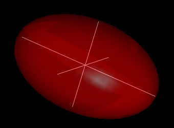
|
|
Figure 4: Thermal ellipsoid and thermal axes visualization of a individual anisotropic ADP. The thermal axes are the primary axes of the ellipse. The ADP tensor used in this visualization has one axis twice as large as the other two.
|
One option for visualizing a TLS model is to use the TLS calculated individual anisotropic ADPs to draw thermal ellipsoids or thermal axes at every atom position(Figure 3A). Atomic coordinates from a crystal structure are the mean position of all crystallographically equivalent atoms as measured over time and lattice position, and a thermal ellipsoid's surface encloses a volume containing the positions of a percentage of all equivalent atoms measured(within the Gaussian model). Drawing thermal axes is a simplified visualization of the thermal ellipsoids where only the three primary axes of the ellipsoid are drawn(Figure 4). Thermal axis length and the distance of the ellipsoid surface from the ellipsoid center both depend upon the user selected percentage of the Gaussian distribution to enclose, referred to here as isoprobability magnitude. The TLSView default is 50%. The thermal ellipsoid/axes visualization can be used for the TLS translation tensor too, but not the screw displacements. TLSView introduces two new visualizations for the screw displacements: a surface tracing the screw trajectory of the TLS group atoms along bond lines(Figure 3C), and oscillating computer animation of any of the supported visualizations(Figure 3B) along the screw displacement paths. The screw displacements are symmetric about the structure's mean position. The screw animations use a harmonic animation function for illustration only, and in no way is meant to imply the group is acting as a harmonic oscillator. The magnitude of the rotation about each axis depends on the MSD rotational magnitude for the axis and the Gaussian isoprobability magnitude set by the user. The maximum rotational displacement for the surface or animation will partition the user-selected percentage of the total rotational displacement population. The default is 50%. This visualization is conceptually similar to the thermal axes visualization since the displacement surfaces are drawn from the three primary screw displacement axes and no covariance is shown. TLSView has one control per TLS group for selecting the Gaussian isoprobability magnitude so that all ellipsoids, surfaces, and animations will be drawn in proper relative proportions.

|
|
Figure 5: Thermal ellipsoid visualization comparing a least squares fit TLS model to the the crystallographically refined ADPs of 1R75 chain A's the backbone atoms. A single TLS group was fit to all atoms in the chain and the screw axes and predicted ellipsoids drawn in green. The experimental ADP ellipsoids(spheres in this case because the refined ADPs were isotropic) are colored by ADP(temperature factor) magnitude from blue(lowest) to red(highest). The TLS predicted ellipsoids are larger than the refined ellipsoids near the interior of the protein, and smaller at the protein surface. No sigma based weighting scheme was used for the least squares fit.
|
The thermal ellipsoid visualization in TLSView can be used to visually compare the displacement contributions of translational and screw TLS displacement in a TLS calculated ellipsoid. The TLS calculated ellipsoid is rendered transparent, and a smaller ellipsoid calculated from the reduced translation tensor or the screw displacement is rendered opaque. And example of this is shown in Figure 1. TLSView uses the reduced translation ellipsoid for the opaque ellipsoid.
When TLS parameters are fit to the refined isotropic or anisotropic ADPs, the thermal ellipsoids from the refined model and TLS model may be compared by drawing both ellipsoids. Figure 5 shows both experimental and TLS predicted ellipsoids for the backbone atoms of 1R75 chain A. The refined isotropic ellipsoids are colored on a red to blue gradient by magnitude and the TLS predicted anisotropic ellipsoids are colored green, but rendered transparently. The TLSView GUI supports transparency settings for most solid objects, and this is especially useful for an ellipsoid when a larger ellipsoid obscures a smaller one. The isotropic ADPs from chain A ellipsoids are necessarily rendered as spheres, but a TLS model fit to them can predict anisotropic ellipsoids which show group displacement in a preferred direction.
User Interface: Main Window
|
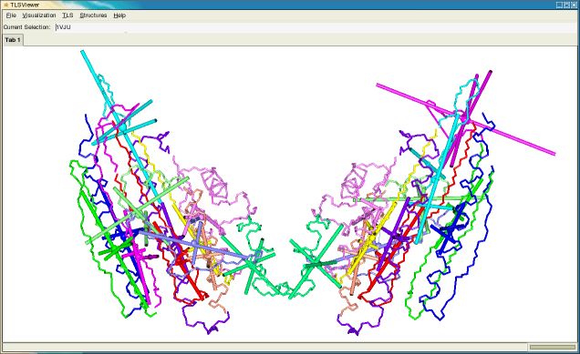
|
|
Figure 6: TLSView main window with displaying chains A and B of structure 1VJU. Each chain has been split into 12 TLS groups. The unique color assignment occurs on a per-chain basis, so groups in chains A and B which share the same color are independent groups. This color assignment scheme aids in comparing the TLS groups of homo-dimers.
|
The user interface of TLSView is programed using the GTK+ user interface toolkit, embedding a OpenGL rendering window using GtkGLExt widget. It supports tabbed viewing, multiple windows, and loading multiple structures. Commands are available through the menu bar as follows:
Table 4: TLSView Main Window Menubar
| Menu/Submenu |
Command Description |
| File/* |
Commands to open/close new windows, tables, and open structures files in PDB or mmCIF format.
|
| Visualization/Properties Browser... |
Opens the visualization properties browser dialog for the
visualization Tab currently in view.
|
| TLS/TLS Analysis |
Opens the TLS Analysis dialog for the macromolecular structure selected in the Current Selection bar.
|
| Structures/* |
Select the current structure.
|
| Help/About... |
Opens one mostly unhelpful dialog.
|
The controls for structure navigation mimic PyMOL(http://pymol.sourceforge.net) implementing a virtual trackball and clipping plane adjustment. All three mouse buttons and the SHIFT key are used:
Table 4: Mouse Navigation Controls for Virtual Trackball and Clipping Plane Adjustment
| Mouse Button |
No Key |
Depressing SHIFT |
| Left |
XY Rotation |
No Change |
| Middle |
XY Translation |
No Change |
| Right |
Zoom In and Out |
Move Near and Far Clipping Plane |
User Interface: Visualization Properties Dialog
| 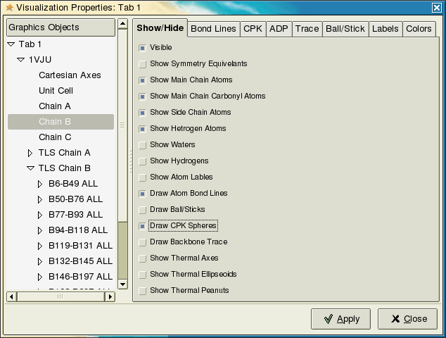 |
|
Figure 7: Visualization properties dialog for TLSView Tab 1. The visualization properties of 1VJU chain B are selected.
|
The Visualization Properties Dialog is used to modify the default visualization settings in TLSView. Each tab window has its own Visualization Properties Dialog, and all the structures loaded in the tab window are arranged hierarchically by structure and chain in the left hand pane of the dialog. The right hand pane displays panels containing settings for the currently selected visualization object, and any changes made to the visualization settings to not take effect until the Apply button has been depressed. Most users familiar with molecular viewers will recognize the various options for visualizing structures, and most of the options work as expected. Colors are selected through drop-down boxes which provide a menu of solid colors or color functions. Depending on the object, the list of colors might be quite small, but the user can always enter a custom color using a floating point RGB triplet, separated by commas. The range for each RGB value is between 0.0-1.0. When the selection Random is available in the menu, selecting it generates a single random RGB triplet which is displayed in the color selection entry box once applied.
The hierarchical arrangement of graphics objects allows parent objects to control the settings in their child objects. This is the case for the TLS Chain object, which collects together the individual TLS groups defined in the chain. Most options selected in the TLS Chain property panels are propagated to the TLS Group objects they contain, but properties of TLS Group objects can also be set individually.
User Interface: TLS Analysis Dialog
| 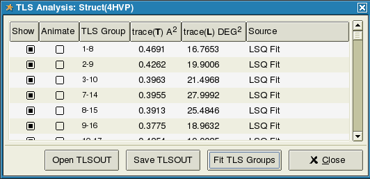 |
|
Figure 8: The TLS Analysis Dialog listing the TLS groups of structure 4HVP.
|
The TLS Analysis dialog provides a interface for loading TLS group definitions for a macromolecular structure. Active TLS groups are listed along with useful information and controls over the TLS visualization, although most of the TLS visualization options are manipulated through the Visualization Properties dialog which can be opened automatically by double-clicking on a TLS row. The Show button will show/hide the entire visualization for the TLS group, and the Animate button turns on/off screw displacement animations. The TLS Group column describes the TLS group, usually by showing the residue range of the TLS group, but this can also be a text name if the TLS group definition was loaded from a REFMAC5 TLSIN/TLSOUT file. The trace of the Tcor and Lcor tensors are given, the Source column describes the source of the TLS group.
TLS groups can be loaded from the output files of a TLS crystallographic refinement, or fit by the method of least squares to the refined structure's isotropic or anisotropic ADPs. TLSView supports the REFMAC5 TLSIN/TLSOUT file format. The TLSIN file contains a listing of all TLS groups as defined by chain and residue segment. The TLSOUT file uses the same format, but includes extra lines for each TLS group giving the origin of calculation, T, L, and S tensor values. When a TLSIN file is loaded, TLSView attempts to automatically fit TLS parameters to the structure's refined ADPs for the residue ranges given. When this fit is successful, the Source column indicates the group was "LSQ Fit". The LSQ fit TLS parameters may be saved to a TLSOUT file by clicking the Save TLSOUT button.
| 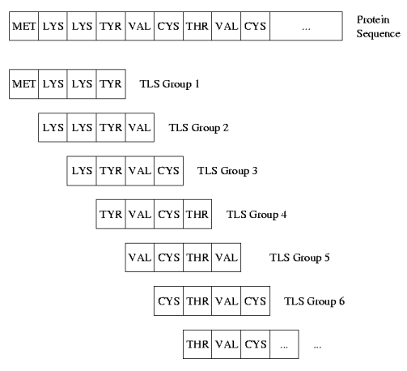 |
|
Figure 9: Illustration of how the TLSView Fit TLS Groups algorithm selects protein segments for testing against the TLS model. Each segment is fit to the TLS model by least squares using its refined atomic ADPs. A segment width of four residues is shown in this figure, but the TLSView default is six and can be set through the user interface.
|
Fitting TLS parameters to refined ADPs with groups defined in a TLSIN file requires the user to manually select the residues for each TLS group. This may be useful for proteins which have well defined domains, but does not help search for such regions in a protein. TLSView implements a simple rigid body search algorithm we call a TLS Running Segment Fit(TLS-RSF) which helps identify rigid regions of a structure. The dialog for this running this algorithm is available through the Fit TLS Groups button. It works by performing a least squares fit of TLS parameters to the first w continuous residues of a protein or biopolymer, moving the starting residue for the segment selection up the chain by one, and repeating the TLS fit until the segment reaches the end of the polymer(Figure 9). The TLS predicted atomic ADPs are then compared with the refined ADPs by a goodness of fit metric function called dP2. Some of the TLS parameters fit this way result in T and L tensors with negative eigenvalues in violation of intrinsic TLS model assumptions. These groups are automatically thrown out, and the valid groups are visualized and colored by their goodness of fit. The color gradient used ranges from yellow for the best fit group, to black for the poorest fit. The search dialog is shown in Figure 10 and contains options for selecting specific chains, and options to filter out side chain atoms and atoms with partial occupancy. Figure 11A shows the initial visualization of the TLS groups fit by the TLS-RSF algorithm for a structure of HIV protease(4HVP). The visualization is cluttered with screw axes from all the overlapping TLS groups. Once the screw axes are hidden(Figure 11B), the backbone trace is revealed. It is colored by TLS goodness of fit and shows similar trends in the A and B chains of the 4HVP homo dimer. Regions where the backbone trace is white could not be fit with a valid TLS model. These regions could be heavily disordered, or have significant internal motion.
| 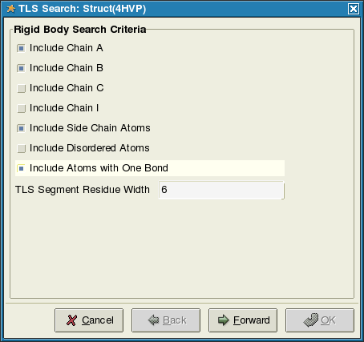 |
|
Figure 10: Option dialog for the TLS-RSF algorithm in TLSView. This dialog shows chains A and B selected for TLS searching. The residue segment length of each TLS group is set to six residues. Side chain atoms and atoms with one bond are included in the TLS parameter least squares fit, but atoms with partial occupancy are omitted.
|
| (A) |
| 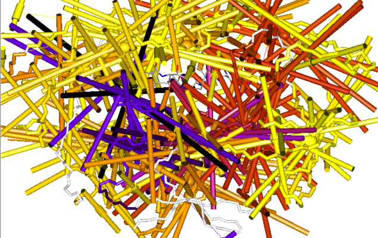 |
| (B) |
| 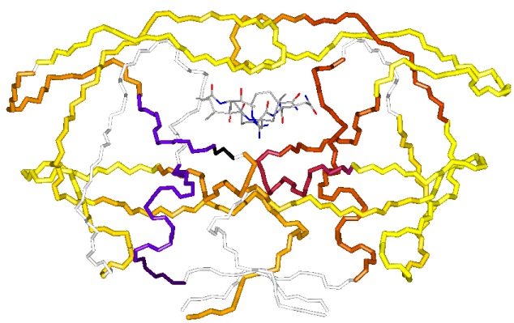 |
| (C) |
| 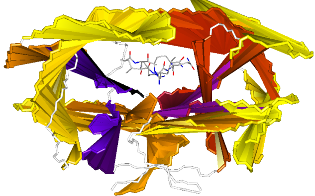 |
|
Figure 11: Three visualizations of TLS-RSF generated TLS groups fit to the isotropic ADPs of HIV protease(4HVP) using a segment width of eight residues. Many overlapping TLS groups are shown with this visualization. Each TLS visualization is colored by its goodness of fit to the TLS model from yellow(best fit) to blue then black(poorest fit). (A) Shows the default visualization cluttered by a overwhelming number of screw axes. (B) Shows the same visualization with the TLS screw axes hidden. Each residue of the backbone trace is colored using fit gradient color of TLS group which fits it best, so continuous regions of good TLS fit may span multiple TLS groups with very different displacements. (C) Drawing a series of connected triangles using the TLS group center of reaction for one triangle vertex, and successive backbone atoms of the TLS segment for the other two triangle vertexes yields a visualization which looks like a paper/bamboo fan. The fans help identify TLS groups with similar centers of reaction, and therefore are likely to have similar displacements.
|
User Interface: Visualization Properties For TLS Groups
| 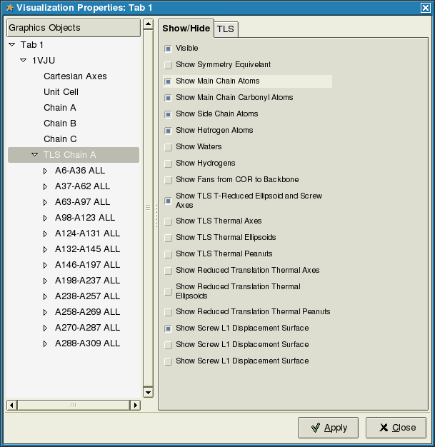 |
|
Figure 12: Visualization properties of a TLS Chain visualization object. TLS Chain visualization objects contain all TLS Group visualization objects on a chain. Setting changed in TLS Chain objects are propagated to all the TLS Group visualization objects.
|
Table 5: TLS Visualization Properties
| Option | Description |
| Show COR-Backbone Fan</td>
| Draws a series of connected triangles using the TLS group center of reaction as one triangle vertex, and successive backbone atoms of the TLS group residues for the other two triangle vertexes. |
| Show TLS Tr/Screw Axes |
Draws a static visualization of the three translational and three screw displacements of the TLS group. The thermal ellipsoid of the Tr tensor is drawn at the center of reaction, and the three screw axes drawn with a length proportional to their RMSD rotational magnitude. |
| Show UTLS Thermal Axes |
Draws UTLS thermal axes for selected TLS group atoms. |
| Show UTLS Thermal Ellipsoids |
Draws UTLS thermal ellipsoids for selected TLS group atoms. |
| Show UTLS Thermal Peanuts |
Draws UTLS thermal peanuts for selected TLS group atoms. |
| Show Tr Thermal Axes |
Draws Tr thermal axes for selected TLS group atoms. |
| Show Tr Thermal Ellipsoids |
Draws Tr thermal ellipsoids for selected TLS group atoms. |
| Show Tr Thermal Peanuts |
Draws Tr thermal peanuts for selected TLS group atoms. |
| Show L1,L2,L3 Screw Displacement Surface |
Draws the screw displacement trajectory surface for the screw axes derived from the first, second, and third eigenvector of the Lcor tensor. |
| Add Atom BISO to UTLS |
When viewing TLS groups refined by REFMAC5, it is necessary to add the residual isotropic temperature factor to the TLS calculated anisotropic ADP tensor. TLS parameters refined using REFMAC often predict non-positive definite UTLS atomic ADPs which cannot be visualized as a Gaussian probability distributions. Adding the residual refined BISO to the TLS calculated tensor for each atom usually makes the tensor positive definite and accurately represents the refined ADP. |
| TLS Group Visualization Color |
Sets the color used by all of this group's TLS visualizations. |
| Isoprobability Magnitude |
The Gaussian isoprobability magnitude for used by thermal axes, thermal ellipsoid, and screw displacement surface visualizations for the TLS group. |
| Scale Screw Axes Length |
Scale the length of the screw axes by the given real number. |
| Screw Axes Radius |
The radius of the screw axes in Angstroms. |
| UTLS Thermal Ellipsoid Opacity |
Opacity setting for thermal ellipsoids. |
| UTLS Thermal Peanut Opacity |
Opacity setting for thermal peanuts. |
| UTLS Thermal Peanut Opacity |
Opacity setting for thermal peanuts. |
| Screw Displacement Surface Opacity |
Opacity setting for the screw displacement surfaces. |
| COR-Backbone Fan Opacity |
Opacity setting for the COR-Backbone Fan. |
| Simulation Time |
Simulation time setting for the harmonic animation of atom visualization about the three TLS screw axes. The time range is from 0.0-1.0, and fed as x to the function sin(2*pi*x) to calculate the screw displacement magnitude rendered in the visualization. |
| L1,2,3 Simulation Rotation |
The rotation currently used for the three screw displaced visualizations. |
Last modified by Jay Painter

{kind=link}
{kind=link}
{kind=link}
{kind=link}
{kind=link}